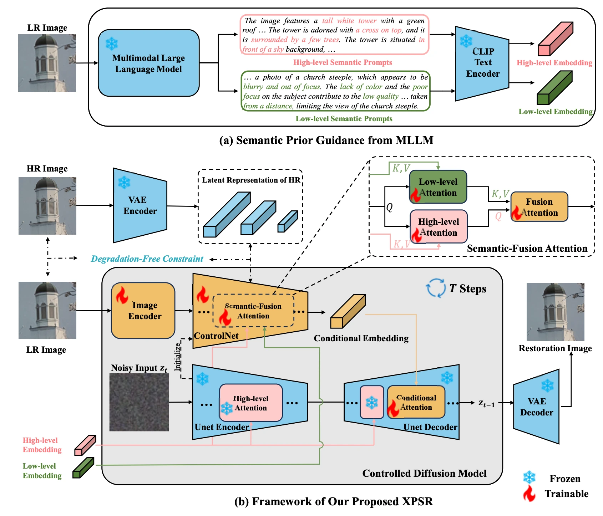
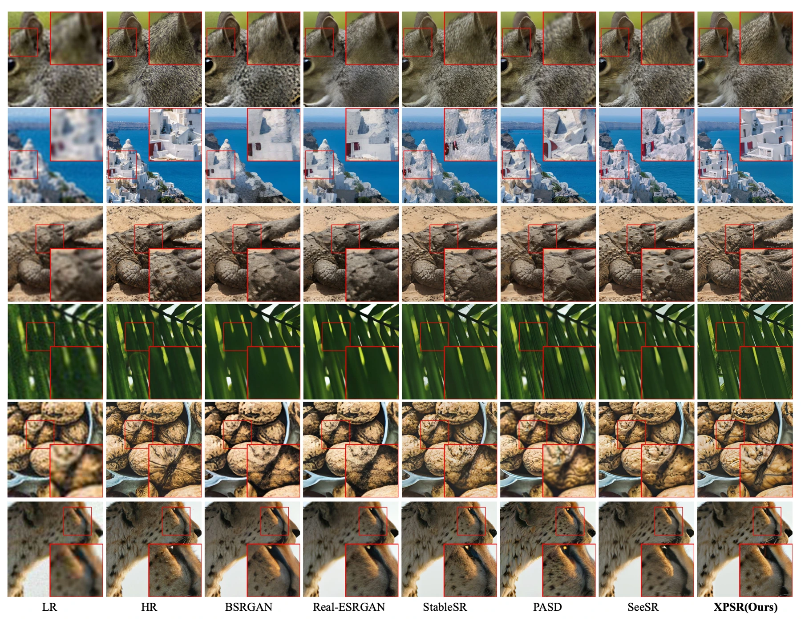

A damaged low-resolution image may no longer clearly communicate its content. A strong generative prior can then fill gaps with incorrect structures or artifacts. XPSR addresses the quality of the conditioning information supplied to the restoration model.
受损的低分辨率图像可能无法清晰表达原始内容。强大的生成先验可能因此补出错误结构或伪影。XPSR 关注提供给恢复模型的条件信息质量。
The central question is how to supply useful meaning without also carrying the input’s degradations into the representation used for generation.
核心问题是如何提供有用语义，同时避免把输入退化带入用于生成的表示。
Giving diffusion a clearer semantic signal为扩散提供更清晰的语义信号
Multimodal language models provide semantic conditions for the diffusion process. Semantic-Fusion Attention combines these cross-modal priors. A Degradation-Free Constraint encourages representations to preserve useful content without carrying unwanted degradations from the low-resolution input.
多模态语言模型为扩散过程提供语义条件，语义融合注意力整合这些跨模态先验。去退化约束鼓励表示保留有用内容，避免将低分辨率输入中的不良退化一并传递。
A semantic description can supply high-level context that is difficult to infer from a severely degraded patch, while image features retain spatial evidence. Simply combining them would still risk carrying compression or noise into the condition. The degradation-free constraint addresses that leakage, and fusion attention controls how the two modalities interact. The architecture therefore treats semantic assistance and degradation suppression as complementary requirements for useful conditioning.
语义描述可以补充严重退化局部难以辨认的高层上下文，图像特征则保留空间证据。但简单拼接仍可能把噪声或压缩伪影带入条件。去退化约束针对这种泄漏，融合注意力控制两种模态如何交互，因此语义辅助与退化抑制被视为有效条件信息的互补要求。
{kind=link}

Checking guidance and degradation separately分别检验语义引导与退化约束
The study evaluates synthetic degradations and real photographs, using semantic captions produced from degraded inputs. Ablations remove cross-modal fusion, the degradation-free constraint and parts of the prompt design. Human preference and visual examples complement quantitative metrics. The paper also examines why pixel-level similarity can disagree with perceptual quality, rather than interpreting every metric as a measurement of the same objective.
研究在合成退化和真实照片上评测，并从退化输入生成语义描述。消融移除跨模态融合、去退化约束及部分提示设计，再以人类偏好和可视化补充定量指标。论文还分析像素相似度为何可能与感知质量不一致，而不是把所有指标都视为同一目标的度量。
What cross-modal priors contribute跨模态先验带来的作用
On DIV2K-val, the paper reports relative gains over SeeSR of 10.34% in MANIQA, 8.57% in CLIPIQA and 1.64% in MUSIQ. A real-image user study gives XPSR a 64.3% selection rate among six methods. These results emphasize perceived quality and semantic detail; diffusion methods can still trail GAN-based methods on pixel-level PSNR and SSIM.
在 DIV2K-val 上，论文报告相对 SeeSR 的 MANIQA、CLIPIQA 和 MUSIQ 分别提升 10.34%、8.57% 和 1.64%。真实图像用户研究中，XPSR 在六种方法中获得 64.3% 的选择率。优势主要体现在感知质量和语义细节；扩散方法的像素级 PSNR、SSIM 仍可能低于 GAN 方法。
{kind=link}

Semantic help without semantic invention语义辅助应避免语义虚构
Semantic guidance can help a restoration model decide what a damaged region represents, but a mistaken caption can also guide generation in the wrong direction. The strongest reading of the results is therefore conditional: better conditioning improves the tested pipeline. It does not establish that language can recover information that is absent from an image with certainty.
语义引导有助于模型判断受损区域表达什么，但错误描述也可能把生成过程引向错误方向。因此，更稳妥的结论是：更好的条件信息改善了所测流程，而不是语言能够确定地恢复图像中已经不存在的信息。
Paper & authors论文与作者
XPSR: Cross-modal Priors for Diffusion-based Image Super-Resolution ↗
Cite this work
@misc{qu2024xpsrcrossmodalpriorsdiffusionbased,
title = {XPSR: Cross-modal Priors for Diffusion-based Image Super-Resolution},
author = {Yunpeng Qu
and Kun Yuan
and Kai Zhao
and Qizhi Xie
and Jinhua Hao
and Ming Sun
and Chao Zhou},
year = {2024},
eprint = {2403.05049},
archivePrefix = {arXiv},
primaryClass = {cs.CV},
url = {https://arxiv.org/abs/2403.05049}
}